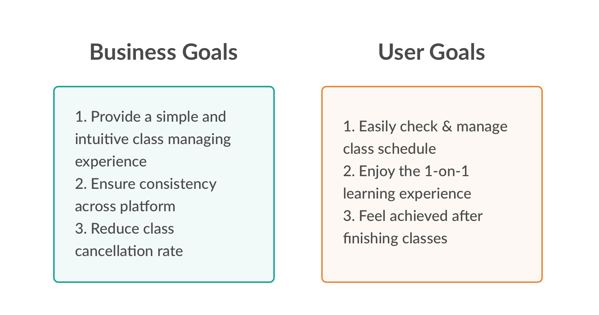
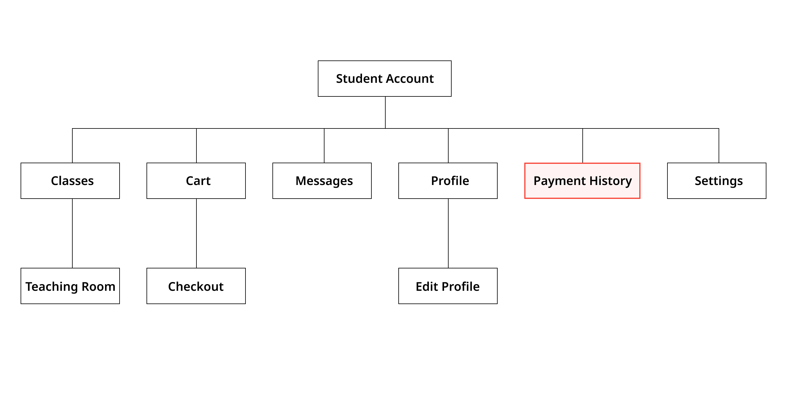
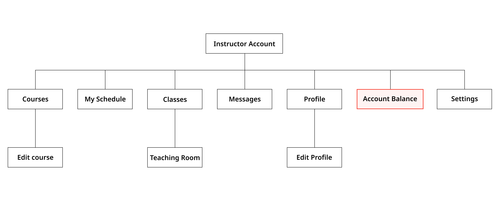
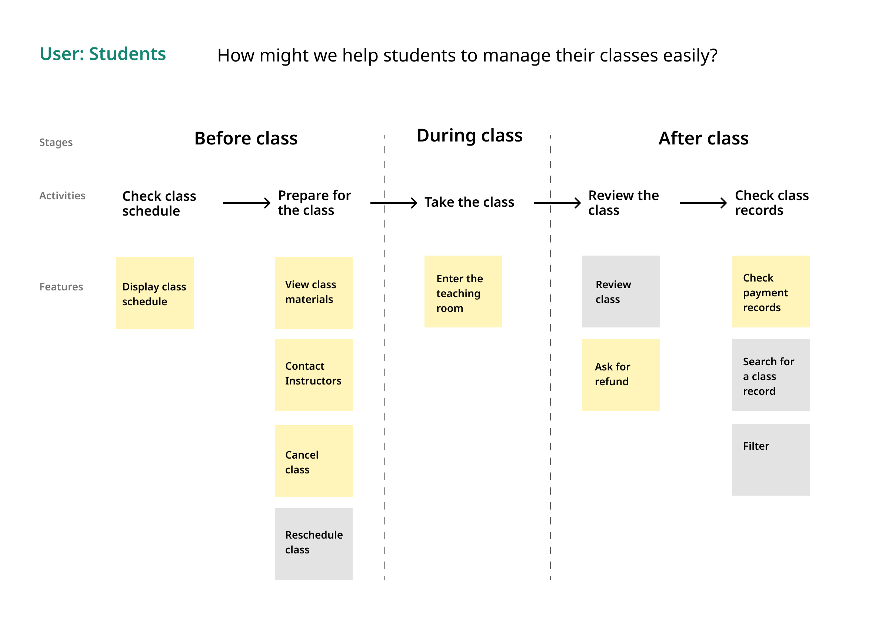

Class Managing | Etomon
Designed an easy-to-use class managing page in 7 days.
7 days
1 UX/UI Designer (me)
1 UX Writer (Fozia Akter)
1 Project Manager (Helen Tang)
Product Strategy
Information Architecture
User Experience Design
Visual Design
Usability Testing
Figma
Pen & Paper
Adobe Illustrator
Overview
Etomon is an e-learning platform where students and teachers from different countries and areas connect and learn 1-on-1 in realtime. Teachers on the platform can set up their courses and lessons, while students can schedule lessons with the teachers to enjoy the online learning experience.
In this project, I was tasked to design the My Classes page for student users to manage class schedules and check class records. Because we were aiming to launch in 3 months, the time frame for this project was extremely tight. I had to finish it in 7 days.
My team and I worked closely on this project, and I delivered our design to the development team right on time. Now the design is live on Etomon's website.
Class schedule & Record
Group upcoming classes by week to provide an efficient browsing experience. Sort history classes by course to keep records organized.
Schedule management
Incorporate multiple essential features in one place while keeping a simple and clean interface.
Refund claiming
Guide users through the refund policy before filling out the refund claim form.
Problem
It was three months before launch, and the old class managing page had a lot of dead ends and bugs. Besides, the UI was out-of-date and inconsistent with the rest of the website. Therefore, we decided to design a new My Class page for student users to manage their class schedule and check learning history.
Approach
I used three main approaches to help me tackle this design problem:
Design for MVP
Bearing in mind that our primary goal is to LAUNCH AN MVP, we had to prioritize use cases strategically.
Follow the procedure
We learned from the past that following the design procedure step by step is crucial to producing a high-quality design under pressure.
Test early, test smart
I tested my ideas with different groups of people during different design stages to help me make decisions with confidence.
Understanding the goals
A successful project always starts from a clear understanding of the goals. The goal of this project was to create a smooth class managing experience with limited time and resources. The high-level business goals and user goals are as following:
Since the timeframe was super tight, I felt I need to take a step back to view the whole picture of the product so that I can get a better sense of what kind of features should be included in the scope. So I checked the sitemap I made a while ago, and I found something interesting that I didn't expect:
 I noticed that under student accounts, there was a Payment History page that collected all transaction information for the user. Similar to the student's Payment History page, instructors also have a page -- Account Balance -- where they can check their earnings and make transfers from Etomon to their bank accounts. While the importance of having an Account Balance page to keep transaction records for merchants (instructors) is easy to understand, separating payment records and class records for buyers (student users) seems unusual.
To confirm my intuition, I did a quick research on our competitor websites and also some large e-commerce websites. And I was right. None of the websites separated order information and payment records. Integrating these two features on one page could not only provide a more user-friendly online shopping experience but also save a lot of engineering effort.
I reported my findings to my manager, and we decided to incorporate payment records into the My Classes page we were designing.
Brainstorming
Based on the three general user needs and the project limitations, I brainstormed for tasks a student might perform on My Classes page. It helped me to gather a list of feature requests for the MVP.
After discussing the possibility of implementing these features within the given time frame with engineers, we decided to focus on seven user tasks and I planned out the information and functions we needed for each task.

Prototyping & User testing
Two rounds of user tests were conducted using prototypes of different levels of fidelity. Prototypes helped me to quickly present the ideas and test them with the internal team to validate and iterate until the best experience had been achieved.
Lo-fi prototype
Based on what I learned from the brainstorming process, I created paper prototypes and sketched out the concepts and had them tested with our internal team. Paper prototypes allowed me to quickly test different ideas and decide which design is better.
Mid-fi prototype
Based on the feedback I collected from testing the paper prototypes, I modified the design correspondingly and translated the updated one to mid-fidelity wireframes on Figma. I collaborated with our UX writer to work on the content for each interface to ensure the writings are friendly and to-the-point. To get feedback on the user flows and the page layout, I created a clickable prototype on Figma and presented it to the whole team. Thanks to the opportunity of presenting my ideas to different roles, I was able to gather a lot of useful insights and use them for design iteration.
Visual Design
As Etomon already has an established style guide, I followed the guide when I designed the hi-fidelity wireframes. Several new UI elements were created because I couldn't find anything that in the existing style guide would work for the new design (for example, the attachment icon). I also added the new design specs to the style guide to make sure it is always updated for the whole team to use.

What's next
For the future, I have done documentation of the whole process, and design decisions were explained so that it could help future designers to take over.
Due to the tight timeframe, we weren't able to test the interface and the workflow of the design using the hi-fidelity prototype with potential users. So our next step would be to work with the data team to define success metrics for future user studies.
Reflections
Look at the big picture before diving deep
Knowing the product structure helps designers to understand single features and make better decisions. It could even help early-stage companies to create a product that has a more user-friendly information structure and save time and money towards product launch.
Speak for your users, but don't fight for your users
It is hard for junior designers to find the balance point between business goals and user needs, and I've seen some junior designers defending their design for the sole purpose of providing better user experience. I was there, too. But after finishing this project, I developed a deeper understanding of how designers could help to make both the user experience and the business better. We as UX Designers should speak for our users, but if modifying some parts of the design doesn't hurt the primary task flow or the overall product experience, we should welcome the challenge to make both ends happy.
It's never too early to ask for feedback from others
I was grateful to have my team around when I needed their perspectives on my design. Project feedback, from the very start to the end, has helped me test and reshape my ideas until my project was ready to be delivered to the developers. Big thanks to the entire team at Etomon!